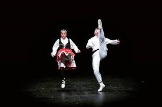

Danza



Nuestros bailes
- Aurresku
- Baile por parejas
- Estilo libre ( todo vale )
- Pekedantza
- Para Bodas,...y bodorrios
Cómo solemos bailar
- Elegir pareja / grupo.
- Tomar aire y relajarse.
- Proteger los pies, para los más torpes
- A Bailar !!!
- Tertulia e historietas del baile>
Aquí tenéis un enlace sobre danzas
Visitar enlace Aprende danzas vascas de manera virtual